1.1 РЕГИСТРИРАНЕ НА ВХОДЯЩ ДОКУМЕНТ
Под-меню Регистриране на входящ документ, дава възможност за регистриране на входящ документ в ЕИСС от потребител:
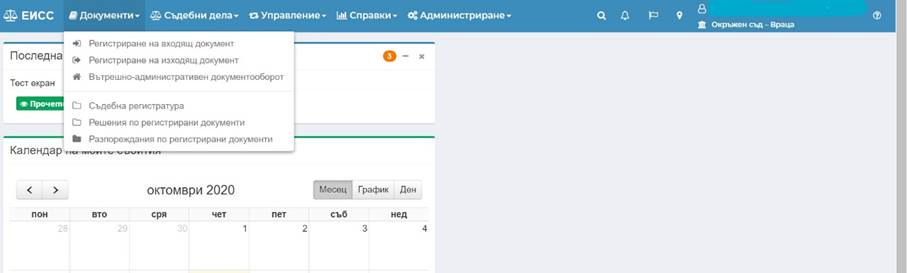
Системата дава възможност за регистриране на три типа документа:
· Иницииращ – въз основа на такива документи се инициира образуване на дела;
· Съпровождащи – документи постъпващи в процеса на разглеждане на вече образувани дела;
· Обща администрация – документи постъпващи в съдебната регистратура, без да се отнасят по съдебни дела;
При Регистриране на входящ документ, след избор на определен тип документ се визуализират съответен набор от данни за попълване в зависимост от избрания тип – иницииращ, съпровождащ или обща администрация.
1.1.1 Иницииращ документ
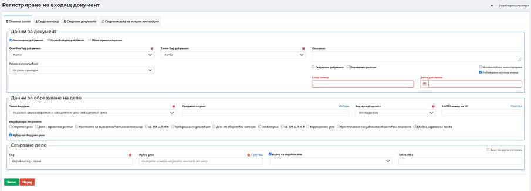
При регистриране на Иницииращ документ се попълва информация в няколко отделни таба, като всеки от тях съдържа отделни секции:
· Таб Основни Данни
ü Секция Данни за документ
- Основен вид документ – представлява номенклатура от стойности, групиращи точните видове иницииращи документи. От падащото меню се избира основният вид документ, който се регистрира:
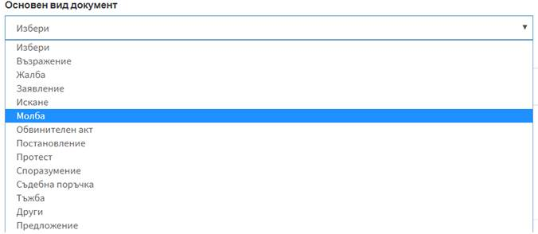
- Точен вид документ – в зависимост от избраната стойност в поле основен вид документ се филтрират стойности в падащото меню за точния вид на иницииращия документ. Потребителят избира точен вид документ, който се регистрира.
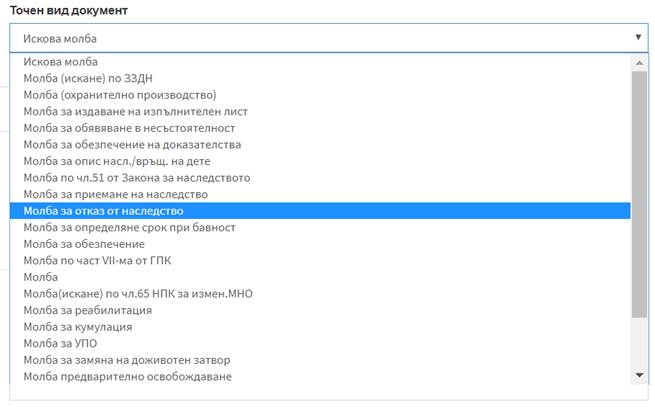
- Описание – поясняващо поле, в което могат да бъдат вписани допълнителни данни, по преценка на потребител. Полето няма задължителен характер.
- Начин на получаване – оказва начина на получаване на документа, като от падащ списък има възможност за избор на стойност от номенклатура. По подразбиране в полето е заредена стойност На регистратура, която при необходимост може да бъде променена от потребител.
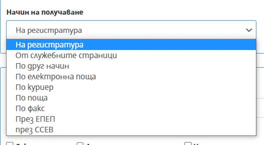
Забележка: При Регистриране на входящи документи с начин на получаване „По поща“, се отваря допълнителни полета с възможност за отбелязване на указание по отношение на пратката: Писмо, Колет, Препоръчано, Препоръчано с обратна разписка; както и Дата на пощенското клеймо на пратката.
- Секретен документ – индикатор, оказващ че регистрираният документ има секретен характер или поставен гриф. Отбелязването става с поставяне на отметка в полето. По този начин се дава възможност по този документ да бъде образувано дело и то да бъде разпределено.
- Ограничен достъп – индикатор, оказващ че регистрираният документ изисква ограничен достъп. Отбелязването става с поставяне на отметка в полето. Това ограничава достъпа до този документ и последващото образувано дело.
-
Въвеждане на стар номер – при необходимост от пререгистриране в ЕИСС на
стар документ, получил номер от друга деловодна система, потребителят слага
отметка в полето 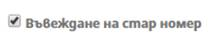
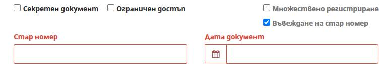
След регистрация на такъв документ, той запазва номерът и датата въведени в полетата, ръчно от потребителя, но системата допълнително съхранява данни за датата и часът на пререгистрация в ЕИСС, които се визуализират в горния ляв ъгъл на секцията Данни за документ:
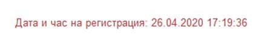
- Множествено регистриране – дава възможност за едновременно регистриране на документи, в случаите, когато те са еднакви като вид документ и вносителя е едно и също лице. При избор на бутон Множествено регистриране се появява поле Брой документи, в което трябва да се въведе техния брой. След попълване на поле Свързани лица и избор на бутон Запис се визуализират номерата на регистрираните документи:
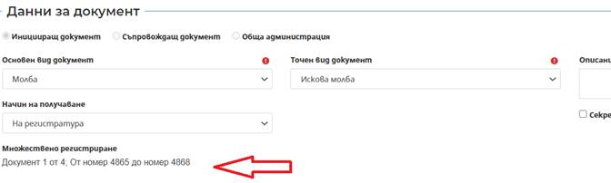
ü Секция Данни за образуване на дело
Секцията е опционална и дава възможност за предварително въвеждане на информация по отношение на делото, което трябва да бъде образувано по иницииращия документ .
- Точен вид дело – полето дава възможност за избор на стойности от падащ списък, като има връзка с избрания точен вид иницииращ документ, от който се определя един или повече приложим точен вид дело;
- Предмет на дело - Избор на предмет на делото от номенклатура според избрания точен вид дело. Полето е autocomplete, като при въведени минимум три последователни символа търси в номенклатура за предмет по шифър (статистически код), предмет и законово основание за дело. Като допълнителна функционалност и улеснение за потребителите, Предмет на дело може да бъде избран от списък с приложимите шифри, който се извежда на екран при натискане на бутон Избери, над полето Предмет на дело;
- Вид производство – избира се вида на производството в зависимост от начина на разглеждане. По подразбиране стойността на полето е По общия ред, но при необходимост може да бъде променено от потребител.
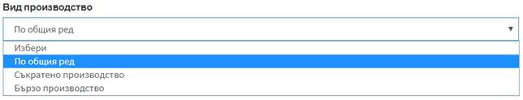
- Индикатори по делото – поставя се чекбокс в зависимост от делото.
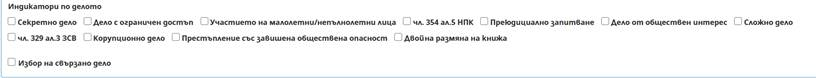
Забележка: В обхвата на системата не се предвижда да бъдат разглеждани документи и дела със секретен достъп. Такива документи могат да бъдат регистрирани с минимален набор от данни, за да получат номер, което да позволи образуване на дело и разпределението му в ЕИСС.
- ЕИСПП номер на НП – полето се визуализира при образуване на Наказателни дела. В полето се прави валидация на въведения формат съгласно стандартите на ЕИСПП.
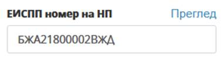
Въвежда се ЕИСПП номер и се избира бутон Преглед, което дава възможност за преглед и преизползване на данните въведени по наказателното производство.
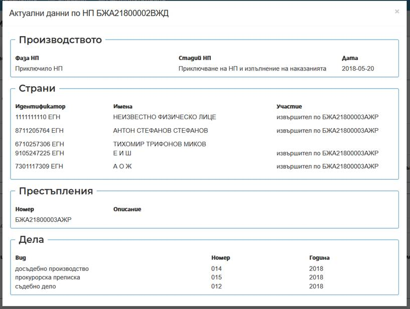
В модален екран се отварят актуални данни за наказателното производство, групирани в следните секции:
- Производство – визуализира се обща информация за производството по отношение на фаза, стадии и дата на наказателното производство;
- Страни – визуализира се обща информация за страните, срещу които е образувано НП, която съдържа данни за идентификатор, имена, участие. Данните могат да бъдат преизползвани в таб Свързани лица към иницииращия документ;
- Престъпления – визуализира се информация за ЕИСПП номер на престъплението и описание;
- Дела – визуализира се информация за делата образувани по съответното НП.
ü Секция Свързано дело – секцията се визуализира при поставяне на отметка в чекбокс за Избор на свързано дело. В секцията се вписват данни ако документът е свързан с дело на текущ съд или с дело на друга съдебна инстанция (например при образуване на дело, се посочва делото на по-висшата съдебна инстанция, което през движение на делото е върнато на първа инстанция).
Забележка : Когато делото е от друга деловодна система, след въвеждането на 14-цифрения номер и запис, се визуализира син удивителен знак, чрез който се вижда и името на съда, от който е делото.
- Съд – чрез автоматично попълване след търсене по част от името на съда (въвеждат се минимум 3 символа);
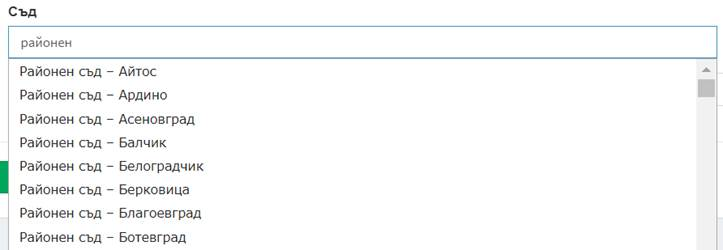
- Избор дело – чрез автоматично попълване след търсене по номер на свързаното дело или част от него;
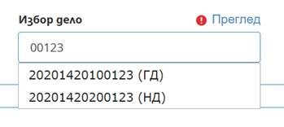
Забележка: Реализирана е функционалност за преглед на свързано дело при регистриране на иницииращ документ в насрещен съд. При регистриране на въззивна/касационна жалба (документ за обжалване на 2 и 3 инстанция) или иницииращ документ във връзка с изпратено дело по подсъдност/компетентност, при избор на свързано дело от друга инстанция/съд, ако по изпратеното дело има създадено движение към съда, в които се регистрира иницииращия документ, през хиперлинка "Преглед" над поле Избор дело има възможност за преглед на свързаното дело.
- Избор на съдебен акт – полето е достъпно след поставяне на отметка в чекбокс и се избира съдебен акт от падащ списък с възможни актове от избраното свързано дело. Полето не е със задължителен характер.
Забележка: въвежда се допълнителна информация при необходимост. Полето не е със задължителен характер.
Важно!
За въззивна инстанция по входящ иницииращ документ,
по който се образува въззивно дело, е задължително въвеждане на данни за
свързано дело или дело от друга деловодна система, за което потребителят слага
отметка в полето
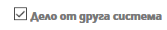
Системата дава възможност да се въведат данни за Номер на дело от друга деловодна система и забележка, в съответните екранни форми:
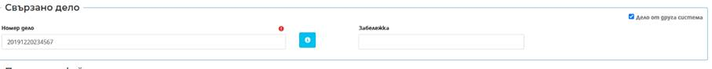
- Номер на дело – въвежда се 14 цифрения номер от друга деловодна система на свързаното първоинстанционно дело (съгласно формат на номер на дело по ПАС);
Забележка: въвежда се допълнителна информация при необходимост. Полето не е със задължителен характер.
Един път въведени данните за свързано дело от друга деловодна система като част от данните по входящия иницииращ документ след образуване на делото няма да подлежат на корекция, аналогично на всички останали данни по входящия иницииращ документ, съгласно реализираната функционалност на ЕИСС. Не се прави проверка дали въведения номер на дело от друга деловодна система е въвеждан в системата ЕИСС.
· Таб Свързани лица
За да се запише даден документ трябва да има поне едно въведено лице по него. Въвеждането на лице по документ може да стане посредством един от следните бутони: Добави лице, Избери институция, Избери лица и адреси.
ü Секция Свързано лице – за въвеждане на данни на физическо и/или юридическо лице.
Бутон Добави лице е активен на екрана за добавяне на данни за повече от едно лице, свързани с регистрирания документ. При всеки избор на бутон Добави Лице се зарежда следният екран и съответните полета, групирани в секция Свързано лице:
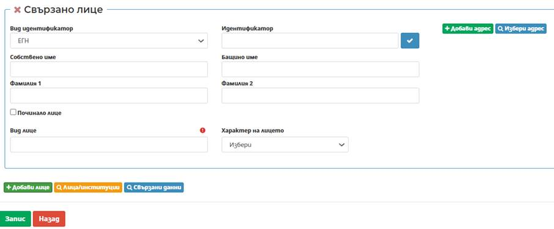
Забележка: Задължително се въвежда поне едно лице или институция.
- Вид на идентификатор – избира се вида на идентификатора от номенклатура, в зависимост от типа лицето:
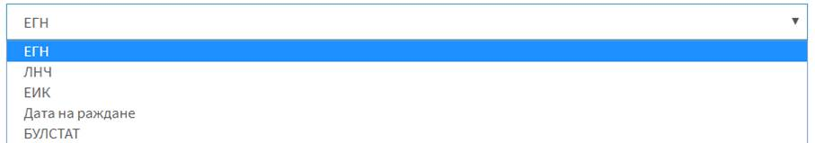
- Идентификатор – в зависимост от избрания вид на идентификатора се въвеждат данни за него
Чрез бутон Провери
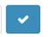
Забележка: При налични данни за постоянен и настоящ адрес за лицето за което се извършва проверка в НБД, данните се зареждат в съответните полета в ЕИСС:
- Имена за ФЛ и/или наименование за ЮЛ – въвеждат се в съответните полета, които се променят в зависимост от избрания вид идентификатор: Собствено име, Бащино име, Фамилия, Фамилия 2 за физически лица; Наименование на юридически лица.
- Чек бокс „Починало лице“ – при извличане на данни от НБД и в случай че лицето е починало, чек бокса се маркира автоматично, като се визуализира и допълнително поле „Дата на смърт“, в което се попълва автоматично датата извлечена от НБД.
- Системата дава информация за починало лице посредством показания по-долу индикатор“
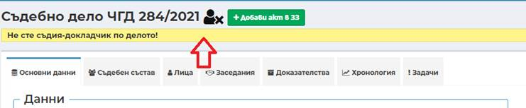
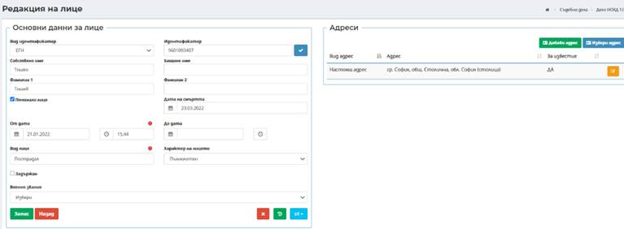
- Информация за „починало лице“ се визулизира и в списъка с лица по делото, като индикатора е в началото на самия ред.
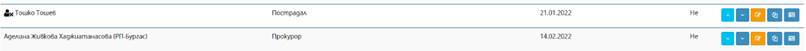
- Вид лице – полето е задължително, като чрез въвеждане на минимум три символа се избира вида на лицето по отношение на документа или съдебното производство от номенклатура;
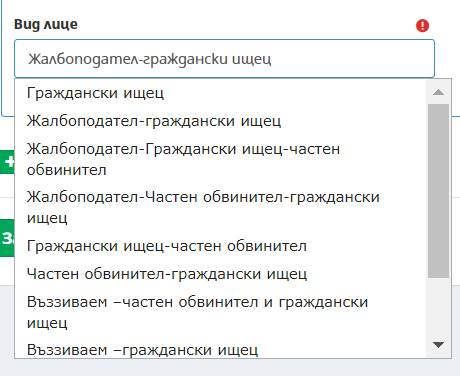
- Характер на лицето – полето не е задължително, но при въведен идентификатор ЕГН се изчислява възрастта на лицето и автоматично се попълва стойност на полето, която може да се промени от потребител.
Важно! При наказателни дела в Основни данни за лице има възможност за отбелязване, посредством чекбокс, дали лицето е задържано. Информацията излиза и в списъка на лица по делото/заседанието
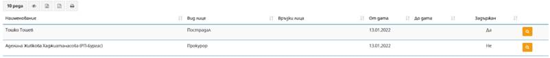
В дясната част на секция Свързано лице, могат да бъдат въведени данни за адресът/ите за съответното физическо и/или юридическо лице, посредством бутони: Добави адрес, Избери адрес .
o Добави адрес
Нов адрес за съответното лице се въвежда при
избор на бутон Добави адрес
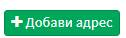
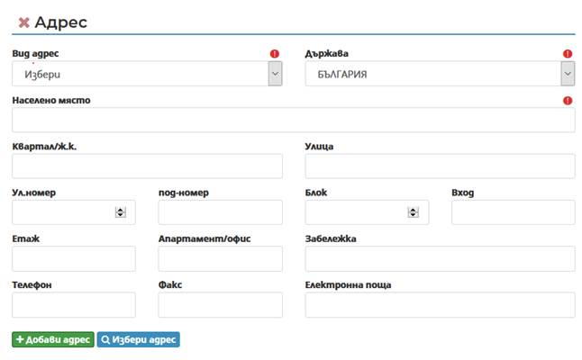
Забележка: Въвеждат се данните за адрес, като трябва да се въведат вид адрес, държава и населено място.
- Вид адрес – избор на вид на адрес от номенклатура;
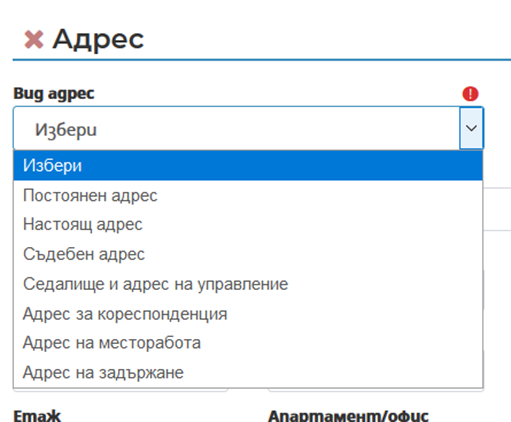
- Държава – избор от номенклатура за конкретната държава за лицето, като по подразбиране в полето е заредено България;
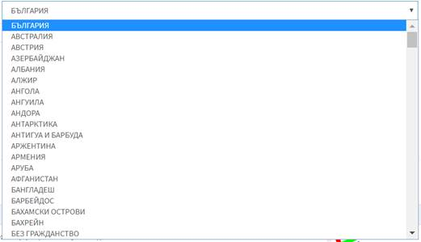
- Населено място – чрез автоматично попълване след търсене по част от името (въвеждат се минимум три букви от населеното място) и се предлага потребителя да избере съответното населено място;
- Квартал/ж.к. – чрез автоматично попълване след търсене по част от името (въвеждат се минимум три букви от квартал/ж.к.);
- Улица - чрез автоматично попълване след търсене по част от името (въвеждат се минимум три букви от наименованието на улица);
- Ул. номер – въвежда се номера на улицата;
- Под-номер - въвежда се под-номера на улицата;
- Блок – въвежда се номер на блок;
- Вход - въвежда се номер на вход;
- Етаж - въвеждат се данни за етаж;
- Апартамент/офис - въвеждат се данни за апартамент/офис;
- Забележка – при необходимост може да се въведе допълнителна информация;
- Телефон – въвежда се стационарен телефон или мобилен номер;
- Факс - въвежда се номер на факс;
- Електронна поща – въвежда се електронна поща на лицето;
- Забележка – Адрес в друга държава – в свободно текстово поле се въвежда адрес.
o Избери адрес – системата дава възможност да се преизползват адреси на лица, които вече са били въвеждани в ЕИСС.
След въвеждане на данни за лице и при избор на бутон Избери адрес се зарежда следният екран за избор на институция
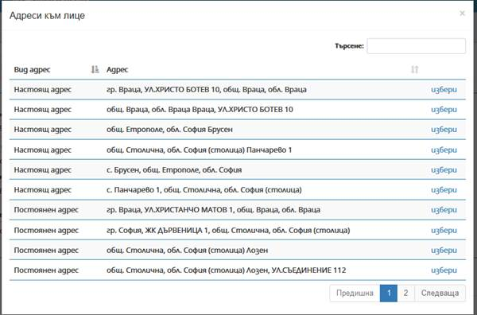
С бутон Избери се зарежда съответния адрес за лицето, като актуален адрес по документа/ делото.
ü Лица/институции – избор на институции вече въведени в ЕИСС.
При избор на бутон Лица/институции се зарежда следният екран за избор на служебни лица и/или институция:
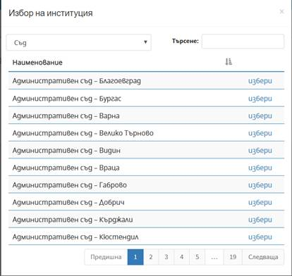
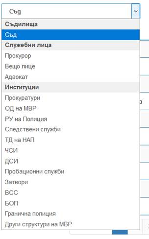
Бутон Лица/институции е активен на екрана за добавяне на данни за повече от едно лице или институция.
При избор на институция, системата автоматично зарежда Седалище и адрес на управление предварително въведени в номенклатурата на институциите. При необходимост системата дава възможност за добавяне/избор на друг адрес, посредством бутоните Добави адрес и Избери адрес, аналогично на функционалността за физически/юридически лица.
ü Свързани данни – дава възможност за преизползване на данни за лица и адреси, въведени в свързани с регистрирания документ дела и/или ЕИСПП номер:
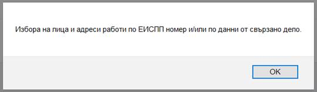
След визуализиране на модалния екран Избиране на лица и адреси към документа, в първата секция от падащ списък се избира източника на данни, от които да бъдат преизползвани лицата и адресите, ако напр. към иницииращия документ има свързано дело и въведен ЕИСПП номер.
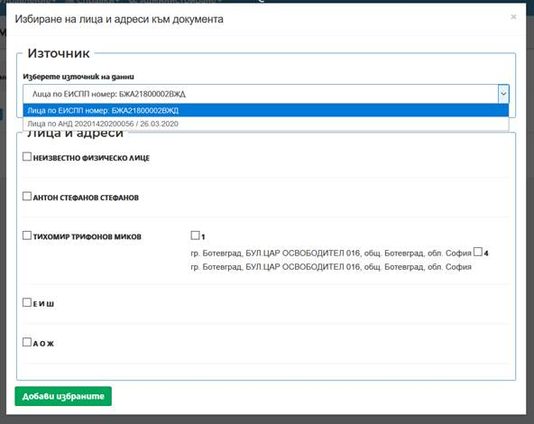
В секция Лица и адреси са изброени лицата, въведените по съответното дело/ЕИСПП номер, като по подразбиране са чекбоксът пред тях е размаркиран. След маркиране на необходимите данни и натискане на бутон Добави избраните, данните се прехвърлят автоматично в съответните полета на таб Свързани лица към иницииращия документ.
· Таб Свързани документи
При избор на бутон Добави свързан документ се зарежда следният екран за въвеждане на данни за:
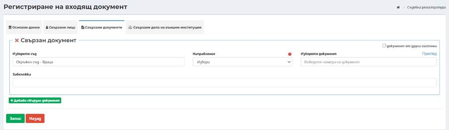
Бутон Добави свързан документ е активен на екрана за добавяне на данни за повече от един документ.
- Съд – чрез автоматично попълване след търсене по част от името на съда (въвеждат се минимум 3 символа);
- Направление – избира се типа на свързания документ от номенклатура;
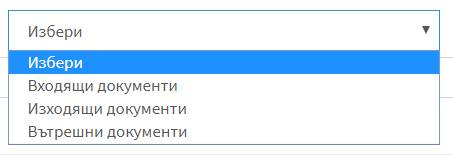
- Изберете документ – въвежда част от номера на свързания документ, като системата предлага всички възможни документи съответстващи на търсенето за избрания съд и направление;
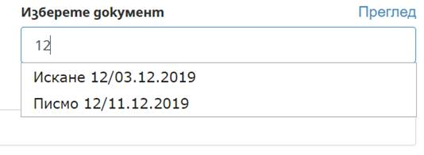
Забележка: Възможен е избор на документи в секция свързани документи на съдебна регистратура с възможност за преглед. П рез хиперлинка "Преглед" над поле Изберете документ има възможност за преглед на свързания документ, който се отваря в нов Таб на браузъра.
При регистриране на документ – входящ или изходящ през функционалността на съдебна регистратура има възможност за въвеждане на номер на свързан документ от друга деловодна системата или избор на документ от ЕИСС.
- Документ от друга система – при маркиране на чекбокса при регистриране на документ – входящ или изходящ през функционалността на съдебна регистратура има възможност за въвеждане на номер на свързан документ от друга деловодна системата;
- Документ номер – въвежда се ръчно номера на свързания документ;
- Документ дата – въвежда се датата на свързания документ от друга деловодна система;
- Забележка – въвежда се при необходимост от уточнение за свързания документ.
· Таб Свързани дела на външни институции
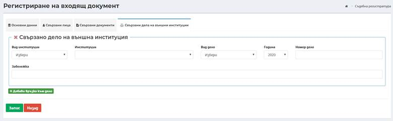
Бутон Добави връзка към дело е активен на екрана за добавяне на данни за повече от едно свързано дело на външна институция.
Забележка: При регистриране на документ може да се въведат данни за свързано дело на външна институция, например от ЧСИ, Прокуратура или др.
При избор на бутон Добави връзка към дело се зарежда следният екран за въвеждане на данни за:
- Вид институция – избор на вид институция;
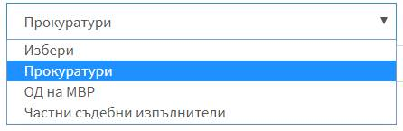
- Институция – зависи от избрания вид институция и се прави избор на конкретната стойност от номенклатура;

- Вид дело – посочва се вида дело на избраната институция;
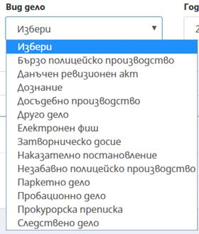
- Година – посочва се годината на делото на свързаната институция;
- Номер дело – вписва се номер на дело на свързаната институция;
- Забележка – п осочват се допълнителни данни при необходимост.
След попълване на данните се избира бутон
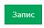
Допълнителни функционалности след запис на документ:
След запис на регистрирания документ се отваря допълнителна секция Прикачени файлове в таб Основни данни, визуализира се бутон Суми към документа и нов таб Задачи в документа.
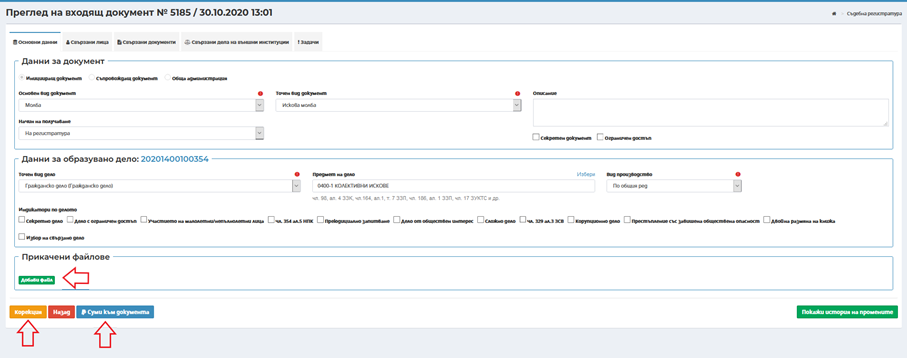
ü Секция Прикачени файлове - към регистрирания входящ документ има възможност да се прикачат файлове на сканирани документи. Прикачването става посредством избор на бутон Добави файл в секция Прикачени файлове на таб Основни данни на документа.
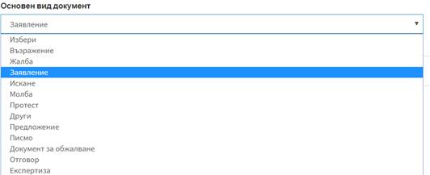
Системата позволява прикачване на вече сканиран файл, чрез бутон Прикачи, или директно сканиране и прикачване към документа, чрез бутон Сканирай, при наличие на свързано сканиращо устройство към компютъра на потребителя. След избор на файл при натискане на бутон Прикачи, бутоните изчезват и системата визуализира процента на качване на файл.
След приключване на прикачването, прозорецът автоматично се затваря и документът се добавя в секция Прикачени файлове. В зависимост от формата на прикачения файл системата предоставя възможност за преглед и/или бърз печат без изтегляне на файла.
Забележка: При грешно прикачен файл, системата позволява същият да бъде маркиран като изтрит посредством бутон от потребител с роля Супервайзор. При маркиране на документи като изтрити, задължително се посочва причина за изтриването им.
ü Бутон Суми към документа – дава възможност за отразяване на задължение за внасяне на сума по входящ иницииращ документ. След избор на бутона се отваря нов екран с възможност за въвеждане на суми и със списък на въведените суми, ако има такива по документа.
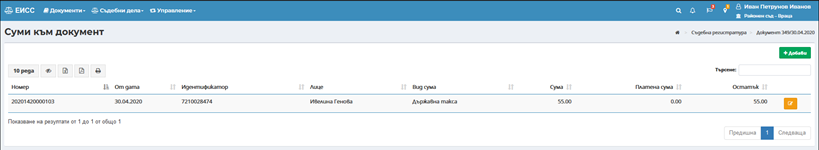
Важно: Когато потребител в ЕПЕП изпрати документ към ЕИСС и по този документ извърши плащане чрез виртуален ПОС ЕПЕП, това плащане автоматично се визуализира в бутон Суми към документ.
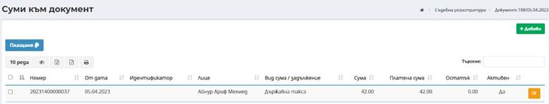
Бутон Добави дава възможност за добавяне на повече от едно задължение по регистрирания документ. При всеки избор на бутона се зарежда следният екран и съответните полета:
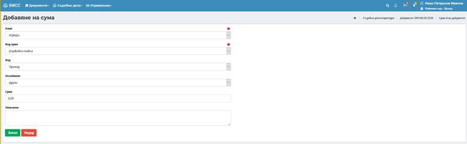
- Лице – избира се лице от въведените свързани лица по документа;
- Вид сума – избира се вид сума от номенклатура;
- Основание – избира се основание за задължение от номенклатура;
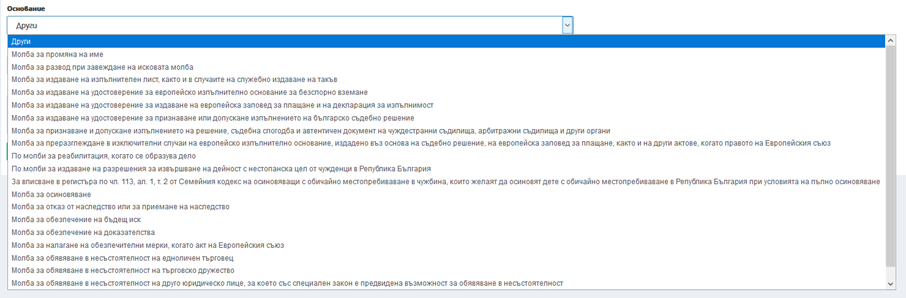
- Сума – за фиксирани суми по тарифа след избор на основание в полета се зарежда съответната дължима сума, която не може да бъде редактирана. За променливи суми в зависимост от материалния интерес сумата се въвежда ръчно;
- Описание – въвежда се допълнителна информация при необходимост. В зависимост от избраното основание за задължението.
След попълване на данните се избира бутон се генерира номер на задължението.
Забележка: Добавянето на задължения може да се направи след регистриране на документа или на по-късен етап при последваща обработка на входящия иницииращ документ. Отразяване заплащането на задължение става в меню Управление -> Финанси.
ü Бутон Редакция се използва в следните случаи:
- Преди да бъде образувано дело, чрез бутон Редакция системата позволява редакция на основен вид документ, точен вид документ, точен вид дело и вид производство. Позволява и корекция на индикатори по делото и начина на получаване.
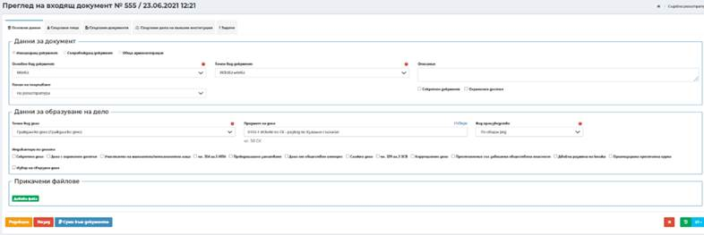
След образувано дело, редакция по входящ документ се прави единствено за начина на получаване и за отбелязване на дела със специален достъп.
- Поле Описание – дава възможност за добавяне на описание при необходимост. Полето няма задължителен характер.
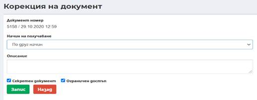
· Таб Задачи
След въвеждане на всички необходими данни по входящия документ се преминава към насочване на задача за последваща обработка. За входящи иницииращи документ има възможност за създаване на следните задачи: За разпределение, За резолюция, За доклад, Пренасочване по компетенция и За разпореждане.
Забележка:
При грешно въведен документ, системата
позволява същият да бъде маркиран като изтрит посредством бутон 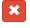
Забележка: Оптимизации в съдебна регистратура за ВКС
При регистриране на входящ, иницииращ документ след избор на основен вид на документ „молба“, точен вид на документа „искова молба (47 ЗМТА)“, системата не изисква въвеждане на свързано дело.
В таб Свързани лица полето Вид лице е autocomplete, необходимата стойност, приложима за ВКС, се избира след въвеждане на минимум 3 символа.
За добавяне на свързано дело, при наличие на такова, в таб Свързани дела на външни институции след избор на бутон се избира Вид институция – Други, Институция – Арбитър или Арбитражен съд (номенклатурата се поддържа от ВСС), вид дело – Друго дело, в поле Забележка се допълва необходимата информация.
След регистриране на документа в таб Задачи при добавяне на нова задача в модалния прозорец в поле Вид задача няма заредена стойност по подразбиране.
1.1.2 Съпровождащ документ
При регистриране на съпровождащ документ се попълва информация в няколко отделни таба, като всеки от тях съдържа отделни секции:
· Таб Основни Данни
ü Секция Данни за документ
- Основен вид документ – представлява номенклатура от стойности, групиращи точните видове съпровождащи документи. От падащото меню се избира основният вид документ, който се регистрира:
- Точен вид документ – в зависимост от избраната стойност в поле основен вид документ се филтрират стойности в падащото меню за точния вид на съпровождащия документ. Потребителят избира точен вид документ, който се регистрира.
- Описание – поясняващо поле, в което могат да бъдат вписани допълнителни данни, по преценка на потребител. Полето няма задължителен характер.
- Начин на получаване – оказва начина на получаване на документа, като от падащ списък има възможност за избор на стойност от номенклатура. По подразбиране в полето е заредена стойност На регистратура, която при необходимост може да бъде променена от потребител.
Забележка: При Регистриране на входящи документи с начин на получаване „По поща“, се отваря допълнителни полета с възможност за отбелязване на указание по отношение на пратката: Писмо, Колет, Препоръчано, Препоръчано с обратна разписка; както и Дата на пощенското клеймо на пратката.
- --- - - Секретен документ – индикатор, оказващ че регистрираният документ има секретен характер или поставен гриф. Отбелязването става с поставяне на отметка в полето. По този начин ще бъде дадена възможност по този документ да бъде образувано дело и то да бъде разпределено.
- Ограничен достъп – индикатор, оказващ че регистрираният документ изисква ограничен достъп. Отбелязването става с поставяне на отметка в полето. Това ще ограничи достъпа до този документ и последващото образувано дело.
- Въвеждане на стар номер – при необходимост от пререгистриране в ЕИСС на стар документ, получил номер от друга деловодна система, потребителят слага отметка в полето , с което системата дава възможност да се въведат данни за стар номер и дата на документ, без да се генерира нов номер от ЕИСС. Датата на документа трябва да е преди въвеждането на ЕИСС в експлоатация.
След регистрация на такъв документ, той запазва номерът и датата въведени в полетата, ръчно от потребителя, но системата допълнително съхранява данни за датата и часът на пререгистрация в ЕИСС, които се визуализират в горния ляв ъгъл на секцията
Данни за документ:
- Множествено регистриране – дава възможност за едновременно регистриране на документи, в случаите, когато те са еднакви като вид документ и вносителя е едно и също лице. При избор на бутон Множествено регистриране се появява поле Брой документи, в което трябва да се въведе техния брой. След попълване на поле Свързани лица и избор на бутон Запис се визуализират номерата на регистрираните документи:
ü Секция Свързано дело – В секцията се вписват данни ако документът е свързан с друго дело на текущ съд.
- Съд – автоматично се попълва името на текущия съд;
- Избор дело – чрез автоматично попълване след търсене по номер на свързаното дело или част от него;
След избор на свързано дело, чрез Преглед може да се разгледа свързаното дело:
- Избор на съдебен акт – полето е достъпно след поставяне на отметка в чекбокс и се избира се съдебен акт от падащ списък с възможни актове от избраното свързано дело. Полето не е със задължителен характер.
- Забележка – въвежда се допълнителна информация при необходимост. Полето не е със задължителен характер;
- Дело от друга система – отбелязва се в случаите, когато свързаното дело е
- образувано в друга система, различна от ЕИСС.
· Таб Свързани лица
За да се запише даден документ трябва да има поне едно въведено лице по него. Въвеждането на лице по документ може да стане посредством един от следните бутони: Добави лице, Избери институция, Избери лица и адреси.
ü Секция Свързано лице – за въвеждане на данни на физическо и/или юридическо лице.
Бутон Добави лице е активен на екрана за добавяне на данни за повече от едно лице, свързани с регистрирания документ. При всеки избор на бутон Добави Лице се зарежда следният екран и съответните полета, групирани в секция Свързано лице:
Забележка: Задължително се въвежда поне едно лице или институция.
- Вид на идентификатор – избира се вида на идентификатора от номенклатура, в зависимост от типа лицето:
- Идентификатор – в зависимост от избрания вид на идентификатора се въвеждат данни за него. Чрез бутон Провери се прави проверка на въведения идентификатор в НБД „Население“, ТРРЮЛНЦ или регистър БУЛСТАТ в съответствие с избрания идентификатор и въведените данни в поле Идентификатор. Данните, които се визуализират от направената проверка, могат да бъдат използвани и заредени в съответните полета на екранната форма, посредством бутона Избери.
Забележка: При налични данни за постоянен и настоящ адрес за лицето за което се извършва проверка в НБД, данните се зареждат в съответните полета в ЕИСС:
- Имена за ФЛ и/или наименование за ЮЛ – въвеждат се в съответните полета, които се променят в зависимост от избрания вид идентификатор: Собствено име, Бащино име, Фамилия, Фамилия 2 за физически лица; Наименование на юридически лица.
- Вид лице – полето е задължително, като чрез въвеждане на минимум три символа се избира вида на лицето по отношение на документа или съдебното производство от номенклатура;
-
- Характер на лицето – полето не е задължително, но при въведен идентификатор ЕГН се изчислява възрастта на лицето и автоматично се попълва стойност на полето, която може да се промени от потребител.
В дясната част на секция Свързано лице, могат да бъдат въведени данни за адресът/ите за съответното физическо и/или юридическо лице, посредством бутони: Добави адрес, Избери адрес .
o Добави адрес
Нов адрес за съответното лице се въвежда при избор на бутон Добави адрес като се зареждат полета в следният екран:
Забележка: Въвеждат се данните за адрес, като трябва да се въведат вид адрес, държава и населено място.
- Вид адрес – избор на вид на адрес от номенклатура;
- Държава – избор от номенклатура за конкретната държава за лицето, като по подразбиране в полето е заредено България;
- Населено място – чрез автоматично попълване след търсене по част от името (въвеждат се минимум три букви от населеното място) и се предлага потребителя да избере съответното населено място;
- Квартал/ж.к. – чрез автоматично попълване след търсене по част от името (въвеждат се минимум три букви от квартал/ж.к.);
- Улица - чрез автоматично попълване след търсене по част от името (въвеждат се минимум три букви от наименованието на улица);
- Ул. номер – въвежда се номера на улицата;
- Под-номер - въвежда се под-номера на улицата;
- Блок – въвежда се номера на блок;
- Вход - въвежда се номера на вход;
- Етаж - въвеждат се данни за етаж;
- Апартамент/офис - въвеждат се данни за апартамент/офис;
- Забележка – при необходимост може да се въведе допълнителна информация;
- Телефон – въвежда се стационарен телефон или мобилен номер;
- Факс - въвежда се номер на факс;
- Електронна поща – въвежда се електронна поща на лицето.
- Забележка – Адрес в друга държава – в свободно текстово поле се въвежда адрес.
o Избери адрес – системата дава възможност да се преизползват адреси на лица, които вече са били въвеждани в ЕИСС.
След въвеждане на данни за лице и при избор на бутон Избери адрес се зарежда следният екран за избор на институция
С бутон Избери се зарежда съответния адрес за лицето, като актуален адрес по документа/ делото.
ü Лица/институции – избор на институции вече въведени в ЕИСС.
При избор на бутон Лица/институции
 се зарежда
следният екран за избор на служебни лица и/или институция:
се зарежда
следният екран за избор на служебни лица и/или институция:
Бутон Лица/институции е активен на екрана за добавяне на данни за повече от едно лице или институция.
При избор на институция, системата автоматично зарежда Седалище и адрес на управление предварително въведени в номенклатурата на институциите. При необходимост системата дава възможност за добавяне/избор на друг адрес, посредством бутоните Добави адрес и Избери адрес, аналогично на функционалността за физически/юридически лица.
ü Свързани данни – дава възможност за преизползване на данни за лица и адреси, въведени в свързани с регистрирания документ дела и/или ЕИСПП номер:
когато има въведени данни за свързано дело или въведен ЕИСПП номер, като лицата по подразбиране са размаркирани:
· Таб Свързани документи
При избор на бутон Добави свързан документ се зарежда следният екран за въвеждане на данни за:
Бутон Добави свързан документ е активен на екрана за добавяне на данни за повече от един документ.
- Съд – чрез автоматично попълване след търсене по част от името на съда (въвеждат се минимум 3 символа);
- Направление – избира се типа на свързания документ от номенклатура;
- Изберете документ – въвежда част от номера на свързания документ, като системата предлага всички възможни документи съответстващи на търсенето за избрания съд и направление;
Забележка: Възможен е избор на документи в секция свързани документи на съдебна регистратура с възможност за преглед. П рез хиперлинка "Преглед" над поле Изберете документ има възможност за преглед на свързания документ, който се отваря в нов Таб на браузъра.
При регистриране на документ – входящ или изходящ през функционалността на съдебна регистратура има възможност за въвеждане на номер на свързан документ от друга деловодна системата или избор на документ от ЕИСС.
- Документ от друга система – при маркиране на чекбокса при регистриране на документ – входящ или изходящ през функционалността на съдебна регистратура има възможност за въвеждане на номер на свързан документ от друга деловодна системата;
- Документ номер – въвежда се ръчно номера на свързания документ;
- Документ дата – въвежда се датата на свързания документ от друга деловодна система;
- Забележка – въвежда се при необходимост от уточнение за свързания документ.
· Таб Свързани дела на външни институции
Бутон Добави връзка към дело е активен на екрана за добавяне на данни за повече от едно свързано дело на външна институция.
Забележка: При регистриране на документ може да се въведат данни за свързано дело на външна институция, например от ЧСИ, Прокуратура или др.
При избор на бутон Добави връзка към дело се зарежда следният екран за въвеждане на данни за:
- Вид институция – избор на вид институция;
- Институция – зависи от избрания вид институция и се прави избор на конкретната стойност от номенклатура;
- Вид дело – посочва се вида дело на избраната институция;
- Година – посочва се годината на делото на свързаната институция;
- Номер дело – вписва се номер на дело на свързаната институция;
- Забележка – посочват се допълнителни данни при необходимост.
След попълване на данните се избира бутон
 и се генерира
номер на входящия документ.
и се генерира
номер на входящия документ.
След запис на регистрирания документ се отваря допълнителна секция Прикачени файлове в таб Основни данни, визуализира се бутон Суми към документа и нов таб Задачи в документа.
След попълване на данните се избира бутон се генерира номер на съпровождащия документ.
Допълнителни функционалности след запис на документ
Важно: Когато потребител в ЕПЕП изпрати документ към ЕИСС и по този документ извърши плащане чрез виртуален ПОС ЕПЕП, това плащане автоматично се визуализира в бутон Суми към документ.
ü Секция Прикачени файлове – към регистрирания входящ документ има възможност да се прикачат файлове на сканирани документи. Прикачването става посредством избор на бутон Добави файл в секция Прикачени файлове на таб Основни данни на документа.
Системата позволява прикачване на вече сканиран файл, чрез бутон Прикачи, или директно сканиране и прикачване към документа, чрез бутон Сканирай, при наличие на свързано сканиращо устройство към компютъра на потребителя. След избор на файл при натискане на бутон Прикачи, бутоните изчезват и системата визуализира процента на качване на файл.
След приключване на прикачването, прозорецът автоматично се затваря и документът се добавя в секция Прикачени файлове. В зависимост от формата на прикачения файл системата предоставя възможност за преглед и/или бърз печат без изтегляне на файла.
Ø
Забележка: При грешно прикачен файл, системата позволява същият да бъде маркиран като изтрит посредством бутон от потребител с роля Супервайзор. При маркиране на документи като изтрити, задължително се посочва причина за изтриването им.
ü Бутон Суми към документа – дава възможност за отразяване на задължение за внасяне на сума по входящ съпровождащия документ. След избор на бутона се отваря нов екран с възможност за въвеждане на суми и със списък на въведените суми, ако има такива по документа.
Бутон Добави дава възможност за добавяне на повече от едно задължение по регистрирания документ. При всеки избор на бутона се зарежда следният екран и съответните полета:
- Лице – избира се лице от въведените свързани лица по документа;
- Вид сума – избира се вид сума от номенклатура;
- Основание – избира се основание за задължение от номенклатура;
- - Сума – за фиксирани суми по тарифа след избор на основание в полета се зарежда съответната дължима сума, която не може да бъде редактирана. За променливи суми в зависимост от материалния интерес сумата се въвежда ръчно;
- - Описание – въвежда се допълнителна информация при необходимост. В зависимост от избраното основание за задължението.
След попълване на данните се избира бутон
 се генерира
номер на задължението.
се генерира
номер на задължението.
Забележка: Добавянето на задължения може да се направи след регистриране на документа или на по-късен етап при последваща обработка на входящия съпровождащ документ. Отразяване заплащането на задължение става в меню Управление -> Финанси.
Таб Задачи
След въвеждане на всички необходими данни по входящия документ се преминава към насочване на задача за последваща обработка. За входящи съпровождащи документ има възможност за създаване на следните задачи: За резолюция, За доклад, Пренасочване по компетенция, За решение и За разпореждане.
Забележка: При грешно въведен документ, системата позволява същият да бъде маркиран като изтрит посредством бутон от потребител с роля Супервайзор. При маркиране на документи като изтрити, задължително се посочва причина за изтриването им. Маркирането на съпровождащ документ като изтрит е възможно преди разглеждането му в съответното свързано дело.
1.1.2.1 Изготвяне на писма за правна помощ
На Регистратура се регистрира Съпровождащ документ. Основен вид – > Искане, Точен вид документ – > Искане за правна помощ. Свързва се с делото и се добавя за разглеждане в Заседанието -> Съпровождащи документи -> Съпровождащи документи през регистратура.
След разглеждане и постановяване на съдебен акт, функционалността за искане за правна помощ се достъпва от екрана на делото, меню Основни данни –> Действия, чрез бутон Искане за правна помощ.
Избира се бутон , след което се зарежда екран за Добавяне на искане, в който се попълва информацията за искането и има възможност за изготвяне на писмо . В лявата част на екрана, в секция Основни данни, полетата Основание за изпращане, Вид правна помощ, Акт за допускане на ПП са с падащи менюта, които съдържат номенклатурни списъци достъпни за избор. В Акт за допускане на ПП, като възможности за избор се визуализират постановените и влезли в сила актове. Ако има насрочено бъдещо заседание, данни за него се извеждат в поле Да се явят на заседание. В случай на искане за назначаване на служебен защитник за повече от едно лице по делото, има възможност за маркиране в полето Противоречиви интереси, с цел индикация за необходимостта от назначаване на различни защитници. Полето Служебен защитник на предходна инстанция се попълва ако съществуват такива обстоятелства. Допълнителна информация относно искането е свободно текстово поле, в което може да се въведе допълнителна информация.
В дясната част на екрана в секция Адвокати на другата страна, се визуализира информация за добавените по делото адвокати (име, служебен номер, качество по делото). Чрез отметки пред името се прави избор на адвокатите на другата страна. Възможно е да се добавят и на по–късен етап (но преди да се регистрира писмото), след което като задължително се запазва информацията с избор на бутон .
В секция Лица, за които се иска правна помощ с отметка може да се изберат лицата, за които се иска правна помощ или ако се пропусне, има възможност да се добавят впоследствие от бутон . Бутон служи за множествен избор, в случай че за няколко лица се иска назначаване на един служебен защитник.
Важно!!! Лица, за които се иска правна помощ трябва да имат въведени идентификатор и адрес в таб Лица по делото.
След добавяне на всички описани данни се избира бутон . От бутон се изготвя и регистрира изходящо писмо , след подписване на изходящия документ ЕИСС изпраща заявка за искане за правна помощ към ЕЕСПП.
Отново в дясно на екрана, в секция Върнати адвокати по заявка за правна помощ от ЕЕСПП, се визуализира информация за върнати адвокати от ЕЕСПП, за лицето/лицата, които искат правна помощ. Информацията се визуализира след получаване на отговор от ЕЕСПП с определен служебен защитник.
Важно!!! Преди да се регистрира писмото е необходимо да се сложат отметки пред името/имената на адвоката/ите на другата страна (ако не е направено до момента) и да се избере бутон !
Последните две полета Съдебен акт за назначаване, Основание за назначаване се попълват след назначаването на служебен защитник със съответния съдебен акт на съдията-докладчик.
От бутон има възможност да се премахне искане, при установено неправилно въвеждане, само в случай че няма регистрирано изходящо писмо.
От бутон е възможно да се проследи статуса на интеграцията с ЕЕСПП.
След като е получен отговор от ЕЕСПП през бутон срещу имената на адвоката, който е определен се потвърждава или отменя подадения служебен защитник през ЕЕСПП.
Изборът на бутон зарежда екран Върнати адвокати по заявка за правна помощ от ЕЕСПП, в който се определя статуса на избора: Определен, Потвърден, Отказан.
Забележка: След получен отговор от ЕЕСПП съдията-докладчик по делото получава нотификация в Моите известия, с информация за определен адвокат.
От червения бутон Финализиране в поле Върнати адвокати по заявка за правна помощ от ЕЕСПП се потвърждава въведения статус на заявката.
Забележка: След като се финализира получения отговор, статуса му няма да може да се променя.
След финализиране на получения служебен защитник, чрез бутон на реда на съответното лице в секция Лица, за които се иска правна помощ се отразява направения избор и се избира съдебния акт за назначаване. Данни за служебен защитник при множествен избор се добавят през бутон , като веднъж добавен в Лица по делото, служебният защитник се избира от падащо меню и се избира бутон Запис.
Попълват се полетата Съдебен акт за назначаване (избира се постановения акт за назначаване), въвежда се Основание за назначаване и се избира бутон Запис.
Добавените лица в секция Лица, за които се иска правна помощ като служебни защитници се добавят автоматично в таб Лица в делото.
.
1.1.3 Обща администрация
При регистриране на документ от обща администрация се попълва информация в няколко отделни таба, като всеки от тях съдържа отделни секции:
· Таб Основни Данни
ü Секция Данни за документ
- Основен вид документ – представлява номенклатура от стойности, групиращи точните видове документи от обща администрация. От падащото меню се избира основният вид документ, който се регистрира:
- Точен вид документ – в зависимост от избраната стойност в поле основен вид документ се филтрират стойности в падащото меню за точния вид на документа. Потребителят избира точен вид документ, който се регистрира.
- Описание – поясняващо поле, в което могат да бъдат вписани допълнителни данни, по преценка на потребител. Полето няма задължителен характер.
- Начин на получаване – оказва начина на получаване на документа, като от падащ списък има възможност за избор на стойност от номенклатура. По подразбиране в полето е заредена стойност На регистратура, която при необходимост може да бъде променена от потребител.
Забележка: При Регистриране на входящи документи с начин на получаване „По поща“, се отваря допълнителни полета с възможност за отбелязване на указание по отношение на пратката: Писмо, Колет, Препоръчано, Препоръчано с обратна разписка; както и Дата на пощенското клеймо на пратката.
- Секретен документ – индикатор, оказващ че регистрираният документ има секретен характер или поставен гриф. Отбелязването става с поставяне на отметка в полето. По този начин ще бъде дадена възможност по този документ да бъде образувано дело и то да бъде разпределено.
- Ограничен достъп – индикатор, оказващ че регистрираният документ изисква ограничен достъп. Отбелязването става с поставяне на отметка в полето. Това ще ограничи достъпа до този документ и последващото образувано дело.
- Въвеждане на стар номер – при необходимост от пререгистриране в ЕИСС на стар документ, получил номер от друга деловодна система, потребителят слага отметка в полето , с което системата дава възможност да се въведат данни за стар номер и дата на документ, без да се генерира нов номер от ЕИСС. Датата на документа трябва да е преди въвеждането на ЕИСС в експлоатация.

След регистрация на такъв документ, той запазва номерът и датата въведени в полетата, ръчно от потребителя, но системата допълнително съхранява данни за датата и часът на пререгистрация в ЕИСС, които се визуализират в горния ляв ъгъл на секцията Данни за документ:
- Множествено регистриране – дава възможност за едновременно регистриране на документи, в случаите, когато те са еднакви като вид документ и вносителя е едно и също лице. При избор на бутон Множествено регистриране се появява поле Брой документи, в което трябва да се въведе техния брой. След попълване на поле Свързани лица и избор на бутон Запис се визуализират номерата на регистрираните документи:
· Таб Свързани лица
За да се запише даден документ трябва да има поне едно въведено лице по него. Въвеждането на лице по документ може да стане посредством един от следните бутони: Добави лице, Избери институция, Избери лица и адреси.
ü Секция Свързано лице – за въвеждане на данни на физическо и/или юридическо лице.
Бутон Добави лице е активен на екрана за добавяне на данни за повече от едно лице, свързани с регистрирания документ. При всеки избор на бутон Добави Лице се зарежда следният екран и съответните полета, групирани в секция Свързано лице:
Забележка: Задължително се въвежда поне едно лице или институция.
- Вид на идентификатор – избира се вида на идентификатора от номенклатура, в зависимост от типа лицето:
- Идентификатор – в зависимост от избрания вид на идентификатора се въвеждат данни за него. Чрез бутон Провери се прави проверка на въведения идентификатор в НБД „Население“, ТРРЮЛНЦ или регистър БУЛСТАТ в съответствие с избрания идентификатор и въведените данни в поле Идентификатор. Данните, които се визуализират от направената проверка, могат да бъдат използвани и заредени в съответните полета на екранната форма, посредством бутона Избери.
Забележка: При налични данни за постоянен и настоящ адрес за лицето за което се извършва проверка в НБД, данните се зареждат в съответните полета в ЕИСС:
- Имена за ФЛ и/или наименование за ЮЛ – въвеждат се в съответните полета, които се променят в зависимост от избрания вид идентификатор: Собствено име, Бащино име, Фамилия, Фамилия 2 за физически лица; Наименование на юридически лица.
- Вид лице – полето е задължително, като чрез въвеждане на минимум три символа от се избира вида на лицето по отношение на документа или съдебното производство от номенклатура;
- Характер на лицето – полето не е задължително, но при въведен идентификатор ЕГН се изчислява възрастта на лицето и автоматично се попълва стойност на полето, която може да се промени от потребител.
В дясната част на секция Свързано лице, могат да бъдат въведени данни за адресът/ите за съответното физическо и/или юридическо лице, посредством бутони: Добави адрес, Избери адрес .
o Добави адрес
Нов адрес за съответното лице се въвежда при избор на бутон Добави адрес като се зареждат полета в следният екран:
Забележка: Въвеждат се данните за адрес, като трябва да се въведат вид адрес, държава и населено място.
- Вид адрес – избор на вид на адрес от номенклатура:
- Държава – избор от номенклатура за конкретната държава за лицето, като по подразбиране в полето е заредено България;
- Населено място – чрез автоматично попълване след търсене по част от името (въвеждат се минимум три букви от населеното място) и се предлага потребителя да избере съответното населено място;
- Квартал/ж.к. – чрез автоматично попълване след търсене по част от името (въвеждат се минимум три букви от квартал/ж.к.);
- Улица - чрез автоматично попълване след търсене по част от името (въвеждат се минимум три букви от наименованието на улица);
- Ул. номер – въвежда се номера на улицата;
- Под-номер - въвежда се под-номера на улицата;
- Блок – въвежда се номера на блок;
- Вход - въвежда се номера на вход;
- Етаж - въвеждат се данни за етаж;
- Апартамент/офис - въвеждат се данни за апартамент/офис;
- Забележка – при необходимост може да се въведе допълнителна информация;
- Телефон – въвежда се стационарен телефон или мобилен номер;
- Факс - въвежда се номер на факс;
- Електронна поща – въвежда се електронна поща на лицето;
Забележка: Адрес в друга държава – в свободно текстово поле се въвежда адрес.
o Избери адрес – системата дава възможност да се преизползват адреси на лица, които вече са били въвеждани в ЕИСС.
След въвеждане на данни за лице и при избор на бутон Избери адрес се зарежда следният екран за избор на институция
С бутон Избери се зарежда съответния адрес за лицето, като актуален адрес по документа/ делото.
ü Лица/институции – избор на институции вече въведени в ЕИСС.
При избор на бутон Лица/институции се зарежда следният екран за избор на служебни лица и/или институция:
Бутон Лица/институции е активен на екрана за добавяне на данни за повече от едно лице или институция.
При избор на институция, системата автоматично зарежда Седалище и адрес на управление предварително въведени в номенклатурата на институциите. При необходимост системата дава възможност за добавяне/избор на друг адрес, посредством бутоните Добави адрес и Избери адрес, аналогично на функционалността за физически/юридически лица.
· Таб Свързани документи
При избор на бутон Добави свързан документ се зарежда следният екран за въвеждане на данни за:
- Съд – чрез автоматично попълване след търсене по част от името на съда (въвеждат се минимум 3 символа);
- Направление – избира се типа на свързания документ от номенклатура;
- Изберете документ – въвежда част от номера на свързания документ, като системата предлага всички възможни документи съответстващи на търсенето за избрания съд и направление;
Бутон Добави свързан документ е активен на екрана за добавяне на данни за повече от един документ.
Забележка: Възможен е избор на документи в секция свързани документи на съдебна регистратура с възможност за преглед. П рез хиперлинка "Преглед" над поле Изберете документ има възможност за преглед на свързания документ, който се отваря в нов Таб на браузъра.
При регистриране на документ – входящ или изходящ през функционалността на съдебна регистратура има възможност за въвеждане на номер на свързан документ от друга деловодна системата или избор на документ от ЕИСС.
- Документ от друга система – при маркиране на чекбокса при регистриране на документ – входящ или изходящ през функционалността на съдебна регистратура има възможност за въвеждане на номер на свързан документ от друга деловодна системата;
- Документ номер – въвежда се ръчно номера на свързания документ;
- Документ дата – въвежда се датата на свързания документ от друга деловодна система;
- Забележка – въвежда се при необходимост от уточнение за свързания документ.
След попълване на данните се избира бутон
 се генерира
номер на регистрирания документ.
се генерира
номер на регистрирания документ.
След запис на регистрирания документ се отваря допълнителна секция Прикачени файлове в таб Основни данни, визуализира се бутон Суми към документа и нов таб Задачи в документа.
Важно: Когато потребител в ЕПЕП изпрати документ към ЕИСС и по този документ извърши плащане чрез виртуален ПОС ЕПЕП, това плащане автоматично се визуализира в бутон Суми към документ.
Допълнителни функционалности след запис на документ
ü Секция Прикачени файлове – към регистрирания входящ документ има възможност да се прикачат файлове на сканирани документи. Прикачването става посредством избор на бутон Добави файл в секция Прикачени файлове на таб Основни данни на документа.
Системата позволява прикачване на вече сканиран файл, чрез бутон Прикачи, или директно сканиране и прикачване към документа, чрез бутон Сканирай, при наличие на свързано сканиращо устройство към компютъра на потребителя. След избор на файл при натискане на бутон Прикачи, бутоните изчезват и системата визуализира процента на качване на файл.
След приключване на прикачването, прозорецът автоматично се затваря и документът се добавя в секция Прикачени файлове. В зависимост от формата на прикачения файл системата предоставя възможност за преглед и/или бърз печат без изтегляне на файла.
Забележка: При грешно прикачен файл, системата позволява същият да бъде маркиран като изтрит посредством бутон от потребител с роля Супервайзор. При маркиране на документи като изтрити, задължително се посочва причина за изтриването им.
ü Бутон Суми към документа – дава възможност за отразяване на задължение за внасяне на сума по входящия документ. След избор на бутона се отваря нов екран с възможност за въвеждане на суми и със списък на въведените суми, ако има такива по документа.
Бутон Добави дава възможност за добавяне на повече от едно задължение по регистрирания документ. При всеки избор на бутона се зарежда следният екран и съответните полета:
- Лице – избира се лице от въведените свързани лица по документа;
- Вид сума – избира се вид сума от номенклатура;
- Основание – избира се основание за задължение от номенклатура;
- Сума – за фиксирани суми по тарифа след избор на основание в полета се зарежда съответната дължима сума, която не може да бъде редактирана. За променливи суми в зависимост от материалния интерес сумата се въвежда ръчно;
- Описание – въвежда се допълнителна информация при необходимост. В зависимост от избраното основание за задължението.
След попълване на данните се избира бутон
 и се генерира
номер на задължението.
и се генерира
номер на задължението.
Забележка: Добавянето на задължения може да се направи след регистриране на документа или на по-късен етап при последваща обработка на входящия документ.
· Таб Задачи
След въвеждане на всички необходими данни по входящия документ се преминава към насочване на задача за последваща обработка. За входящи документи от обща администрация има възможност за създаване на следните задачи: За резолюция, Пренасочване по компетенция, За решение и За разпореждане.
Забележка: При грешно въведен документ, системата позволява същият да бъде маркиран като изтрит посредством бутон от потребител с роля Супервайзор. При маркиране на документи като изтрити, задължително се посочва причина за изтриването им.